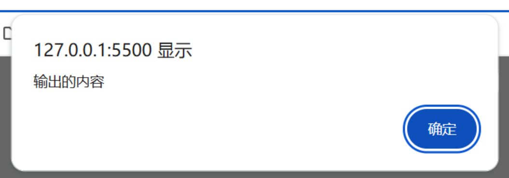

声明：本篇笔记部分摘自《Web前端技术 - 航空工业出版社》 ，遵循CC BY 4.0协议 。
JavaScript 是一种高级、解释型编程语言，主要用于网页开发。它运行在浏览器中，能动态操作网页内容（如DOM）、处理用户交互、发送网络请求等。特点包括：
动态性 ：无需编译，代码可直接运行。面向对象 ：支持基于原型的继承。事件驱动 ：通过事件监听响应用户操作。跨平台 ：几乎所有浏览器都支持。
常与HTML、CSS结合使用，现代框架如React、Vue使其功能更强大。Node.js扩展了其用途，可用于服务器端开发。
指开发者自定义的变量名、函数名、属性等名称。
JavaScript中的标识符命名规则：
由字母、下划线_、美元符号$和数字组成；
不允许以数字开头；
不允许使用关键字和保留字定义标识符（如char）。
标识符的常用格式
全大写命名法：REDBAG（常用于常量命名）
驼峰命名法：redBag（常用于函数命名）
帕斯卡命名法：RedBag（常用于类名和构造器命名）
下划线命名法：red_bag（常用于变量命名）
关键字，指JavaScript预先定义好的单词，被赋予了一定的意义。
常见关键字：break、case、catch、continue、debugger、default、delete、do、else、finally、for、funciton、if、in、instanceof、new、return、switch、this、throw、try、typeof、var、void、while、with。
保留字，指将来可能使用的关键字，是为js发展空间预留的一些单词。
常见保留字：abstract、boolean、byte、char、class、const、double、enum、export、extends、final、float、goto、implements、import、int、interface、long、native、package、private、protected、public、short、static、super、synchronized、throws、transient、volatile。
与Python类似，JavaScript是一种弱类型语言 ，在声明变量时无需确定变量的数据类型，也可以给变量赋予不同类型的数据，JavaScript会根据上下文自动进行类型转换。
1 document .write ("<div>输出的内容</div>" );
直接将元素 加载到页面上（加载的不是文字，而是一个标签 ）
在控制台输出内容，多用于打印相关变量的值，进行调试。

多用于触发相关事件时，弹出相应的警告信息(如关闭标签时询问是否保存)。
1 var is_confirmed = confirm ("提示信息" );
需要确认某项操作，而不仅是通知用户时，使用次方法弹出一个包含"确定"与"取消"按钮的弹窗。
用户点击其中某个选项时，会返回true(确定)或false(取消)。
1 var input_info = prompt ("提示信息" );
ES6 推荐使用)1 2 3 4 5 6 const name = 'Alice' ;const age = 25 ;const message = `My name is ${name} and I'm ${age} years old.` ;console .log (message);
1 2 3 4 5 6 const name = 'Charlie' ;const age = 35 ;const message = 'My name is ' .concat (name, ' and I\'m ' , age, ' years old.' ); console .log (message);
其中，模版字符串 具有以下优点，一般是最佳的方案：
更简洁易读
支持多行字符串
可以直接嵌入表达式 ${expression}
自动处理类型转换
js中的注释方式与C/C++类似,使用下面两种格式进行注释：
1 2 3 4 5 <button onclick ="alert('清除缓存成功！')" > 清除浏览器缓存</button > <a href ="javascript: alert('弹窗内容')" > 点击这里显示弹窗</a >
1 <script src ="js文件路径" [async | defer ]> </script >
一般将外链js的标签写在<body>的末尾，方便浏览器优先加载网页内容，提高响应速度。
async属性(可选)表示异步下载同步执行 ,即下载js文件时不阻塞HTML的解析和显示，js文件下载后立即执行。
defer属性(可选)表示异步下载异步执行，即即下载js文件时不阻塞HTML的解析和显示，等HTML解析渲染完成后再执行文件。
与Python类似，JavaScript是一种弱类型语言 ；与C/C++不同，在声明变量时无需确定变量的数据类型，也可以给变量赋予不同类型的数据，JavaScript 会根据上下文自动进行类型转换。
1 2 3 4 5 6 7 var a = 1 ;"小明" ;const PI = 3.1415926 ;
ES6以前，声明变量时多用var关键字，格式为var 变量名;
ES6以后，增加了let关键字用于声明便联合，语法格式同样为let 变量名;
声明常量使用const关键字；常量一般用全大写命名，在程序运行中的值不变化。
使用var与let的区别：
let支持块作用域(循环体、函数体等)，var不支持。在同一个作用域中，var关键字可以重复声明一个变量，而let不可以。
“ES6（ECMAScript）是由Ecma国际（前身为欧洲计算机制造商协会）通过ECMA-262标
全局变量：在所有函数之外声明的变量。
局部变量：在函数体重声明的变量，或者函数的形参。
块级变量：在代码块(循环体、if分支)中声明的变量，只在对应的块中有效。
是JavaScript特有的数据类型，仅有Undefined一种取值，表示未定义的值。
定义一个变量但未赋值时，变量的值就是undefined。
也是JavaScript中特有的数据类型，仅有null一种取值，是一个空的对象指针。
与Undefined类型相似，null == undefined。
不同之处在于，null表示变量(或对象)不存在或无效，undefined表示变量没有被赋值。
有两个取值，true（真）与false（假）。
使用Boolean()方法，可将undefined类型与Null类型的数据转换成false。
JavaScript中，数值不分整数与小数，所有的数值都属于Number类型。
1 2 3 var a = 10 , b = -10 ;var c = 9.85 , d = 2.12E5 ; var e = 026 , f = 0x34 ;
使用Number()方法将其他类型的值转换成数值类型，转换规则如下表：
类型
Number()的值
Undefined
NaN
Null
0
true
1
false
0
NaN的全称为"not a numble"，表示非数字，但本身属Number类型。在JavaScript中，将一个数除以0不会报错，而是得到一个NaN的值。
对NaN进行任何计算操作，结果都是NaN。NaN不等于任何值，包括它本身。
因此，判断一个值是否非数字时，不应使用if (a == NaN)，而是使用isNaN(a)方法。
此外，在大数据方向，经常使用Number(Null) = 0的特性来将空值化0。
是由多个Unicode字符组成的字符序列 ，可由一对单引号（‘’）或双引号（“”），但是需要正确配对。
常用转义字符见下表：
字符
含义
字符
含义
字符
含义
\'单引号
\b退格
\r回车
\"双引号
\\反斜杠
\f换页
\n换行
\tTab制表符
\eEsc字符
使用String()方法将其他类型的值转换成字符串类型的值，转换规则如下表：
类型
String()的值
Undefined
‘undefined’
Null
‘null’
true
‘true’
false
‘false’
与C/C++类似，JavaScript中同样有+、-、*、/、%、++、--、+=、=等算数运算符与赋值运算符，且用法相同，此处省略。
<、>、<=、>=的用法与C/C++相同。与C/C++不同的是，JavaSCript中除了使用==、!=进行比较，还支持===、!===的比较运算符。
前者在比较时会进行隐式类型转换 ，即将两者转换成相同的数据类型后再进行数值的比较。
后者不会进行隐式类型转换，且在比较数值以外，还会比较二者的数据类型是否相同。
JavaScript的流程控制语句语法与C/C++基本相同，此处只给出语法实例。
1 2 3 4 5 6 7 if (条件1 ) {1 else if (条件2 ) {2 else {3
1 2 3 4 5 6 7 8 9 10 11 switch (变量) {case 取值1 :1 break ;case 取值2 :2 break ;default :3 break ;
注意：此语句使用===进行匹配，即需要确保case中的数据类型与switch的相同，例如：
switch(字符型变量) {case "1"…… case "2"……}switch(Number(字符型变量)) {case 1…… case 2……}
1 2 3 4 5 6 7 8 9 10 11 12 13 for (var i = 0 ; i < n; i++) {for (var name in names) { for (var name in window ) {console .log (name);
多用于明确循环次数的场景
for(;;) {}的写法构成死循环，若无跳出逻辑会导致后续脚本无法执行。
多用于不明确循环次数的场景，或需要根据循环中的状态灵活决定是否继续循环的场景。
while循环可能一次都不进行，但do-while语句至少执行一次。
用于跳出所在的一层循环
用于终止此轮循环，立即跳转到判断是否进行下一轮循环
1 2 3 4 5 6 7 8 function 函数名(形参列表) { return 返回值;console .log (函数名(实参列表));
这种写法会被提升(hoisting)，即可以在定义前调用
1 2 3 4 5 6 7 8 9 10 11 12 13 14 const 函数名 = function (形参列表 ) {return 返回值;function 函数名(形参列表) {return 返回值;console .log (函数名(实参列表));
1 2 3 4 5 6 7 8 9 10 11 12 13 14 15 function putOut (function putIn (x, y ) {alert (x + y);return putIn (1 , 2 );function factorial (n ) {if (n <= 1 ) {return 1 ;return n * factorial (n - 1 );
箭头函数（Arrow Functions）是ES6引入的一种更简洁的函数语法形式。它使用 => 符号定义函数：
1 2 3 4 5 6 7 8 9 10 11 12 13 14 const add = (a, b ) => { return a + b;const square = x => { return x * x;const sqare = x => x * x;const greet = (console .log ("Hello!" );
箭头函数没有自己的 this，继承自外围作用域。
常用在回调函数中，如数组方法、事件处理等。
回调函数是指作为参数传递给另一个函数，并在该函数内部被调用的函数 。回调函数允许我们在某个操作完成或某个事件发生后执行特定的代码。
1 2 3 4 5 6 7 8 9 10 11 function greet (name, callback ) { console .log (`Hello, ${name} !` );callback (); function sayGoodbye (console .log ('Goodbye!' );greet ('Alice' , sayGoodbye);
异步编程的核心机制：定时器、文件读写、网络请求等
函数可以像变量一样被传递、赋值和返回
控制反转：被调用方决定何时调用回调函数
多层嵌套回调，也会导致代码难以阅读和维护（Callback Hell，回调地狱）
在实际编程中，不仅存在来自客观世界的具体对象，还存在着一些为了解决问题引入的，较为抽象的对象。对象可以理解为属性和方法的集合，用户通过操作方法，访问或设置对象的属性，从而实现不同的功能。
1 2 3 4 5 6 7 var 对象名 = {function (参数列表 ) {
这种写法注意不要把方法的定义写成方法(): function {}
1 2 3 4 5 6 7 8 9 10 function 对象名 (参数列表) {this .属性 = 值;this .方法 = function (参数列表 ) {var 对象 = new 对象名(参数列表);
Object对象创建对象
object对象是JavaScript的内部对象，通过这样的对象来创建对象不需要定义构造函数，并且可以随时对其添加属性。
1 2 3 4 5 6 7 8 9 10 var 对象名 = new Object (参数列表)var user = new object (); name = "张三" ; age = 20 ;show = function (document .write ("姓名：" + user.name + "<br/>" )document .write ("年龄：" + user.age + "<br/>" )
变量用于存储某个对象的所有属性名，使用此语句输出对象的属性时，需要使用数组(对象["属性"])的方式，而不是对象.属性的方式，如下所示：
1 2 3 for (var a in user) {console .log (user[a]);
1 2 3 4 5 6 7 8 9 10 11 12 with (对象名) {console .log (user.name );console .log (user.age );with (user) {console .log (name);console .log (age);
用于存储和处理字符串（文本），常用属性与方法见下表：
所有的方法都不能改变原字符串的内容，而是将结果作为方法的返回值给出。
名称
说明
length
获取字符串的长度
replace(旧字符， 新字符)
使用新字符替换字符串中首次出现的旧字符
replaceAll(旧字符， 新字符)
使用新字符替换字符串中所有的旧字符
indexOf(目标字符)
获取目标字符在字符串中首次出现的位置
lastIndexOf(目标字符)
获取目标字符在字符串中最后出现的位置
subString(起始位置， 结束位置)
截取两个位置之间的子字符串，结束位置可省略
toLowerCase()
将字符串的所有字符变为小写
toUpperCase()
将字符串的所有字符变为大写
split(分隔符， 数组长度)
使用分隔符将字符串分隔为指定长度的数组，规则如下所示
trim()
去掉字符串中首尾的空格
1 2 3 4 5 6 str = "This is a string" ;console .log (str.split ("s" ));console ,log (str.split ("s" , 2 ));
名称
说明
now()
返回自1970-01-01 00:00:00到当前时间的毫秒数（静态方法）
getTime()
返回自1970-01-01 00:00:00到当前时间的毫秒数
getTime(时间值)
设置时间
getFullYear()
获取四位数字的当前年份，如2025
setFullYear(年分值)
设置年份
getMonth()
获取当前月份，取值为0~11（加1才是当前月份）
setMonth(月份值)
设置月份
getDate()
获取当前日期，取值为1~31
setDate(日期值)
设置日期
getDay()
获取当前是周几，取值为0~6
getHours()
获取当前小时数，取值为0~23
setHours()
设置小时数
getMinutes()
获取当前分钟数，取值为0~59
setMinutes()
设置秒数
getSeconds()
获取当前分钟数，取值为0~59
setSeconds()
设置分钟数
getMilliseconds()
获取当前毫秒数，取值为0~999
setMilliseconds()
设置毫秒数
名称
说明
PI
圆周率，值为3.141592653589793
random()
获取一个0~1的随机数
ceil(x)
取大于原数的最小整数，如3.4 -> 4
floor(x)
取小于原数的最大整数，如3.4 -> 3
round(x)
获取x四舍五入后的整数
abs(x)
获取x的绝对值
max(x1, x2, x3，···)
取最大值
min(x1, x2, x3，···)
取最小值
pow(基数, 指数)
计算 基 数 指数 基数^{指数} 基 数 指 数
sqrt(x)
计算x的平方根
1 2 3 4 5 var nums = new Array (1 , 2 , 3 );var fruits = new Array ("apple" , "pear" , "orange" );var scentence = new Array ("I" , "have" , 2 , "apples.That is" , true , "." );
其中，关键字new在定义数组时可以省略，如var nums = Array(1, 2, 3);。但考虑到规范性，不建议省略new。
1 2 3 4 var nums = [1 , 2 , 3 ];var fruits = ["apple" , "pear" , "orange" ];var scentence = ["I" , "have" , 2 , "apples.That is" , true , "." ];
使用Array对象与使用[]符号定义数组的区别：
前者可通过传入数值参数定义数组长度，如new Array(2)。
后者可定义包含空值的数组，如var array = [1, , 2, 3]。
// 与Python类似，直接打印数组，即可输出数组中的所有元素：
1 2 3 4 alert (nums); alert (nims[1 ]);
增加元素：直接对数组的新下标赋值
删除元素：使用delete关键字
1 2 3 4 5 6 7 8 9 nums = [1 , 2 , 3 ];alert (nums); 3 ] = 4 ;4 ] = 5 ;alert (nums); delete nums[0 ];alert (nums);
名称/方法
说明
length获取数组的长度。
concat(arr1[, arr2, ..., arrN])连接两个或多个数组，返回一个新数组，不会改变现有的数组。
push(item1[, item2, ..., itemX])向数组末尾添加一个或多个元素，并返回新的数组长度。
unshift(item1[, item2, ..., itemX])向数组开头添加一个或多个元素，并返回新的数组长度。
pop()删除数组的最后一个元素，并返回该元素。
shift()删除数组的第一个元素，并返回该元素。
splice(位置[, 数量, 元素1, ..., 元素])在指定位置添加或删除指定数量的元素。
reverse()反转数组中元素的顺序。
sort([sortby])对数组元素排序。sortby为可选排序函数。
slice([start, end])返回选中的元素组成的新数组。start和end为可选起止位置（负数表示从末尾计算）。
join([separator])将数组元素连接成字符串。separator为可选分隔符（默认逗号）。
DOM(ducoment object model,文本档对象模型)为开发者提供了操作HTML元素和文档节点的属性和方法。 --《Web前端技术》P250
DOM是**W3C(万维网联盟)**组织定义的一个标准，定义了访问文档的标准：“W3C DOM是中立于平台和语言的接口，允许程序和脚本动态地访问、更新文档的内容、结构和样式。”
在JavaScript中，一个HTML文档是一个树状结构，其中的元素、属性、文本等不同的内容在内存中转换成DOM树种相应类型的节点(node)。在DOM中，有以下的对应关系：
HTML
DOM
作用
文档自身
document节点
访问和修改网页的结构
标签
元素节点
访问和修改网页的内容
属性
属性节点
访问和修改网页的样式
文本
文本节点
访问和修改网页的内容
通常利用document对象中的方法来获取HTML文档中的元素。
名称
说明
输出内容
getElementById(id值)
此处Element后没有复数后缀s，说明通过id获取的是唯一 的元素
整个标签
getElementsByName(name值)
获取所有 指定name属性的HTML元素
获取到的节点数组，其中的元素为标签名，如a、span等
getElementsByTagName(标签名)
获取所有 指定标签的HTML元素
输出获取到的标签组合(HTMLColletion)
getElementsByClassName(类名)
获取所有 指定class属性的HTML元素
输出获取到的标签组合(HTMLColletion)
querySelectorAll(选择器名)
获取所有 被选择器选中的HTML元素
实用技巧：将获取到的节点数组赋给一个变量，通过数组下标来访问和操作数组中的标签元素。
原理：直接修改元素样式的属性及属性值
在开发中，通常需要获取和修改元素的内容，DOM提供了以下属性和方法来操作元素内容：
名称
说明
备注
innerText
返回或设置指定元素内去除所有标签和样式 的文本 内容
前者可赋值给变量，后者可修改元素内容
innerHTML
返回或设置指定元素开始和结束标签 中间的HTML 内容
innerText属性不会获取到<script>标签中的内容，此属性可以
textContent
返回或指定元素的文本内容
write()
在文档中写入对应HTML内容
一般直接使用xxx.innerText = xxx的形式直接修改内容，此方法使用较少
writeln()
在文档中写入对应HTML内容并换行
同上，此方法使用较少
原理：修改元素的类名列表来让不同的CSS选择器匹配，实现对样式属性的修改
DOM提供了两种操作元素样式的方式，分别是style属性和class属性。
CSS中的属性名以-为间隔，在DOM中采用驼峰命名法来设置元素的style属性，如text-align -> textAlign
通过a.style.属性可以访问或设置元素的样式，例：a.style.width = 420px;
style属性的一些常用属性与方法见下表：
名称
属性
名称
属性
width
宽度
display
可见性
height
高度
position
位置
color
字体颜色
border
边框
backgroundColor
背景颜色
fontsize
字体大小
marginTop
元素顶部外边距
overflow
溢出显示方法
paddingTop
元素顶部内边距
transform
2D或3D变形
top
元素相对顶部位置
使用元素的classList属性获取元素的类选择器列表
1 2 3 4 document .getElementById ("target" );alert (tar_element.classList );
名称
说明
length
返回classList的长度
value
返回classList的所有元素，用空格分开
add(类名)
添加指定的类名到元素的class属性中
remove(类名)
从元素的class属性中去除指定的类名
toggle(类名)
若存在则删去，不存在则添加
replace(旧类名, 新类名)
使用新类名取代原有的类名
contains(类名)
判断元素的classList中是否已有某类名，返回布尔结果
1 <nav id ="main-nav" > </nav >
1 2 3 4 5 6 7 8 9 #main-nav {background-color : transparent;transition-duration : 500ms ;#main-nav .scrolled { background-color : rgb (100 , 203 , 255 );transition-duration : 500ms ;
通过事件和DOM实现动态向导航栏标签中添加/移除scrolled类：
1 2 3 4 5 6 7 8 9 10 11 12 13 14 15 16 document .addEventListener ('DOMContentLoaded' , function (const nav = document .getElementById ('main-nav' );checkScroll ();window .addEventListener ('scroll' , checkScroll);function checkScroll (if (window .scrollY > 50 ) {classList .add ('scrolled' );else {classList .remove ('scrolled' );
名称
说明
attributes
获取元素的所有属性，返回元素的属性集合
getAttribute(属性名)
返回指定属性的属性值
setAttributes(属性名，值)
将指定属性设置为某个值
removeAttribute(属性名)
删除指定的属性
hasAttribute(属性名)
查询元素是否包含某个属性，返回布尔值结果
DOM提供了一些属性用于获取HTML文档中的节点(元素、属性、文本等不同的内容)
名称
说明
childNodes
获取当前节点的所有子节点
firstChild
获取当前节点的第一个子节点
lastChild
获取当前节点的最后一个子节点
previousSibling
获取当前节点的前一个兄弟节点
nextSinling
获取当前节点的后一个兄弟节点
parentNode
获取当前节点的兄弟节点
nodeName
获取当前节点的节点名称
nodeType
获取当前节点的类型
nodeValue
获取当前节点的值
1 2 3 document .getEllementById ("target" );console .log (span_element.nodeName );
所属对象
名称
说明
document
createElement()
创建并返回元素节点
createTextNode()
创建并返回文本节点
createComment()
创建并返回注释节点
createAttribute()
创建并返回属性节点
element
appendChild()
在子节点列表尾部添加节点
insertBefore()
在当前节点之前添加节点
replaceChild()
替换当前节点
setAttributeNode()
设置或改变指定名称的属性节点
getAttributeNode()
获取指定名称的属性节点
DOM提供了两个方法来删除节点：
removeChild()：删除指定的元素节点removeAttributeNode()：删除指定属性节点
BOM(browser object model,浏览器对象模型)提供了独立于内容的、可与浏览器窗口进行互动的对象结构，方便使用浏览器开放的功能实现更强大的网站。 --《Web前端技术》P250
BOM的结构如下图所示：
BOM由多个对象组成，其核心对象是window，其它内置对象都以属性的形式附属在window对象之下。
BOM的window对象所包含的document属性就是对DOM的document对象的引用。
window对象表示浏览器打开的窗口。如果HTML文档中包含<frame>或<iframe>标签，浏览器将会对每个框架创建一个window对象，并将它们放在frames集合中。
window对象的常用属性与方法见下表：
类型 名称 说明 属性 name 设置或返回窗口的名称 opener 返回创建当前窗口的窗口 self 返回当前窗口，等价于 window 对象 top 返回最顶层窗口 parent 返回当前窗口的父窗口 frames 获取页面中的所有框架 方法 alert(警告信息字符串) 显示警告对话框，用于提示用户注意某些事项 confirm(确认信息字符串) 显示确认对话框，有 “确认” 和 “取消” 两个按钮，单击 “确认” 按钮返回 true，单击 “取消” 按钮返回 false prompt(提示字符串) 显示提示输入信息对话框，返回用户输入信息 open(URL, target, features, replace) 打开一个新的浏览器窗口或查找一个已命名的窗口 close() 关闭浏览器窗口 setTimeout(code, millisec) 在指定毫秒数（millisec）后调用函数或计算表达式（code） clearTimeout(id_of_settimeout) 取消 setTimeout 设置的定时器。id_of_settimeout 表示由 setTimeout()返回的 ID 值，该值标识要取消的延迟执行代码块 setInterval(code, millisec) 按照指定的周期（以毫秒计）调用函数或计算表达式 clearInterval(id_of_setinterval) 取消 setInterval 设置的定时器。id_of_setinterval 表示由 setInterval()返回的 ID 值
### ① 打开和关闭浏览器窗口
- `open(URL, name, features, replace)`方法中包含4个参数：
- `URL`表示将要打开的网页地址，若为空则打开空白页
- `target`表示网页加载的形式，可选值如下：
- `_blank`:默认参数，打开一个新窗口
- `_self`:在当前窗口访问URL
- `_top`:在任何可加载的框架集访问对应URL
- `_parent`:在父框架访问对应URL
- `name`:使用自定义窗口名称打开一个新窗口
- `features`参数表示新打开页面的基本属性，可选值如下：
- `channelmode = yes | no`:是否使用剧院模式显示窗口（默认为no）,仅限IE
- `directories = yes | no`:是否添加目录按钮，默认为yes，仅限IE
- `fullscrean = yes | no`:是否使用全屏模式，默认为no，仅限IE
- `height = 像素值`:窗口高度，最小值为100
- `width = 像素值`:窗口宽度，最小值为100
- `left = 像素值`:该窗口的左侧位置
- `top = 像素值`:该窗口的顶部位置
- `location = yes | no`:是否显示地址字段，默认为yes
- `menubar = yes | no`:是否显示菜单栏，默认为yes
- `resizable = yes | no`:窗口是否可调节尺寸，默认为yes
- `scrollbars = yes | no`:是否显示滚动条，默认为yes
- `status = yes | no`:是否添加状态栏，默认为yes
- `titlebar = yes | no`:是否显示标题栏，默认为yes
- `toolbar = yes | no`:是否显示浏览器工具栏，默认为yes
- `features`中的设置仅在`target`参数为`_blank`时有效
- 使用`open()`方法打开新窗口后，返回值为新窗口的窗口对象，使用此对象的`close()`方法可以将窗口关闭。如下所示：
1 2 var new_window = window .open ("www.baidu.com" , "_blank" ); close ();
### ② 设置和取消定时器
#### 延迟定时器：延迟一段时间后执行操作
- 设置：`setTimeout()`
- 取消：`clearTimeout()`
1 2 3 4 5 6 7 8 9 let timeoutTimer = null ;setTimeout (() => {if () {clearTimeout (timeoutTimer);
#### 周期定时器：按指定周期执行操作
- 设置：`setInterval()`
- 取消：`clearInterval()`
1 2 3 4 5 6 7 8 9 let timeoutTimer = null ; setInterval (() => {if () {clearInterval (intervalTimer);
## 2.location对象：地址栏对象
- 用于获取或管理浏览器地址栏中的相关数据，如获取当前网页地址，从一个网页跳转到另一个网页等。
- 常见locatio对象的属性及方法见下表：
名称
说明
href
返回完整的URL路径
protocol
返回URPL协议
host
返回URL的域名，包含端口号
hostname
返回URL的域名，不含端口号
pathnamne
返回URL的路径
port
返回URL的端口号
search
返回URL的参数
hash
返回URL的hash值
reload()
刷新当前URL的页面
replace()
使用另一个URL地址替换当前URL
assign()
跳转到另一个URL
location对象既是window对象的属性，也是document对象的属性，即window.location和document.location的写法等价。日常开发中，通常使用window.location或直接写location。
用于记录浏览器的历史访问操作，存储当前窗口访问过的所有网页历史记录。
其常用属性和方法如下表：
名称
说明
length
历史列表中的网址数量
state
当前历史记录的状态，默认为null，仅pushState()和replaceState()生成的历史记录才有值
scrollRestoration
前进后退的滚动行为，可选值为auto、manual
back()
返回到上一个历史记录
forward()
前进到下一个历史记录
go()
前往某一个历史记录
pushState()
新建一个历史记录，不刷新页面
replaceState()
新创建一个历史记录并覆盖当前历史，不刷新页面
go(-1)与back()功能一致，都可以返回上个页面go(1)与foward()功能一致，都可以前进道下一个页面
主要用于获取浏览器的相关信息，如浏览器名称、浏览器版本等。
主流浏览器支持的常用属性与方法见下表：
名称
方法
userAgent
浏览器相关信息，用于在http请求中发送给服务端
language
浏览器语言
cookieEnabled
是否开启浏览器cookie
appName
完整浏览器名称（一般和实际浏览器不一致）
appCodeName
浏览器名称，几乎都为Mozilla
appVersion
浏览器版本和平台信息
platform
浏览器所在的操作系统平台
sendBeacon()
发送网络请求信息
javaEnabled()
是否在浏览器中启用Java
示例：(Chrome + WIndows11环境)
navigator.appName 和 navigator.appCodeName 的不准确性主要源于浏览器发展的历史遗留问题和兼容性策略。
早期 Netscape 浏览器的 appName 返回 "Netscape"，而 IE 返回 "Microsoft Internet Explorer"，但现代浏览器（如 Chrome、Firefox、Edge）为了兼容旧网站（可能依赖 appName 检测浏览器），默认沿用 "Netscape"，避免被错误拦截。此外，W3C 并未规范该属性，因此浏览器厂商无需更新它。
而 appCodeName 普遍返回 "Mozilla"，则是因为初代 Netscape 的代码名是 "Mozilla"（意为 “Mosaic Killer”），其 User-Agent 格式被后续浏览器（包括 IE、Chrome 等）沿用，以绕过早期的服务器端检测。如今，所有主流浏览器仍默认返回 "Mozilla"，以保持对老旧网站的兼容性。
若要准确识别浏览器，建议解析 navigator.userAgent 或使用特性检测而非依赖这些过时属性。
用于获取屏幕的相关信息，如宽度、高度、分辨率等。
主流浏览器常用screen属性及方法见下表：
名称
说明
width
返回设备屏幕宽度
height
返回设备屏幕高度
availWidth
返回设备屏幕可用宽度
availHeight
返回设备屏幕可用高度
avalilTop
返回屏幕顶部第一个像素点
availLeft
返回屏幕左侧第一个像素点
orientation
返回屏幕的方向（多用于移动设备的旋转适配）
pixelDepth
返回屏幕像素点
colorDepth
返回屏幕色彩深度
事件可以理解为JavaScript监测到的浏览器行为或用户行为，包括页面加载、鼠标单击、鼠标滑过某区域等。当JavaScript监测到这些事件时，执行一段程序来做出响应，就实现了用户与网页的交互。
目前大多数浏览器（Chrome、Safari、Firefox等）都支持DOM 2级事件的核心部分，但IE9之前的IE浏览器仍使用自己的事件标准。当需要兼容IE8及更低版本的浏览器时，需要做好浏览器环境的兼容处理。
所谓事件流，就是指事件在子元素中发生时，其在各级元素中的流动与传播。例如子元素被点击时，认为子元素和其所有的父级元素均触发单击事件。
HTML文档结构如下：
document
html
body
button
IE团队提出
从最内层元素开始到最外层元素逐层触发
Netscape团队提出
从最外层元素开始到最内层元素逐层触发
W3C制定的DOM事件流规范
事件发生后，首先事件捕获，但不对事件进行处理；
然后进行到目标阶段，定位目标后执行当前元素对象的事件处理程序；
最后实现数据冒泡，向外逐级处理事件。
老版本（IE8及以下）浏览器不支持DOM事件流。
1 2 3 4 5 6 <button onclick ="btnClicked" > 点击弹窗</button > <script > function btnClicked ( alert ("检测到按钮被点击" ); } </script >
这种写法不利于HTML与JavaScript的分离，不建议使用。
使用元素对象的时间属性绑定事件，即在JavaScript中获取标签元素，然后利用标签元素的事件属性绑定事件的处理程序
1 2 3 4 5 var tar_element = document .getElementById ("target" ); onclick = function (alert ("检测到按钮被点击" );
利用DOM对象的事件监听方法绑定事件，即在JavaScript代码中获取标签元素，然后使用该元素调用addEventListener()方法绑定事件处理程序，语法格式如下：
1 2 3 4 5 element = document .getElementById ("目标元素ID" );addEvenrListener (事件， function (true /false );
true/false值可省略，默认/缺省为false，表示冒泡阶段执行；设为true表示捕获阶段执行使用此方法，可以为同一个元素添加多个事件处理程序，且标签元素触发事件时，所有该事件类型绑定的事件处理程序会按照绑定顺序依次调用执行
每触发一个事件时，都会产生一个事件对象，包含了与事件有关的所有信息。
JavaScript会把产生的事件对象event作为参数传递给事件处理程序，方便开发人员获取事件信息。
1 2 3 document .getElementById ("confirm_btn" ).onclick = function (event ) {console .log (event.type );
名称
描述
type
返回事件类型
target
返回触发事件的目标元素
currentTarget
返回响应当前事件的元素
bubbles
该元素是否可以冒泡，返回一个布尔值
cancelable
是否可以取消事件的默认行为，返回一个布尔值
eventPhrase
返回事件所处的事件阶段：1、2、3分别表示捕获、目标、冒泡
preventDefault()
取消事件的默认行为，当cancelable为true时有效
stopPropagation()
阻止事件冒泡，在bubbles为true时有效
当点击子元素时，被直接点击的元素eventPhrase为2(目标阶段)，而父元素的eventPhrase为3(冒泡阶段)
通过查询元素响应事件时的eventPhrase，能够判断元素是被直接点击，还是点击了其下的子元素。
事件名称
触发场景
click
鼠标单击
dbclick
鼠标双击
mousedown
按下任何按键
mouseup
释放鼠标按键
mouseover
鼠标进入元素区域
mouseout
鼠标离开元素区域
mousemove
鼠标在元素内移动
mouseenter
鼠标首次进入元素区域
mouseleave
鼠标离开元素区域
mousewheel
鼠标滚轮滑动
mouseleave和mouseout这两个事件的区别：
mouseout
只要鼠标离开当前元素的边界 （包括进入子元素），就会触发。
即从父元素进入子元素时，父元素会触发 mouseout，子元素会触发 mouseover。
mouseleave
只有鼠标完全离开当前元素及其所有子元素 时才会触发。
即在父元素和子元素之间移动不会触发父元素的 mouseleave。
事件名称
触发场景
keydown
按下键盘按键（长安多次触发）
keyup
松开键盘按键
keypress
按下键盘字符键（不包括Esc、Shift等）
1 2 3 4 5 6 7 document .onkeydown = function (e ) {if (e.keyCode == 13 ) {login (); else return ;
事件名称
触发场景
focus
文本框获取焦点
blur
文本框失去焦点
常用于输入检测，在文本框失焦时认为用户编辑完毕，对输入内容进行合法性检测。
1 2 3 4 5 6 7 8 9 10 11 12 13 document .getElementById ("phone" ).addEventListener ("blur" , function (const phoneInput = this .value .trim ();const phoneRegex = /^1[3-9]\d{9}$/ ; if (!phoneRegex.test (phoneInput)) {alert ("手机号无效，请重新输入！" );this .focus (); this .style .borderColor = "red" ; else {this .style .borderColor = "green" ;
事件名称
触发场景
load
页面完成加载/图片完成加载/框架完成加载
unload
页面或框架卸载
scroll
滚动页面或其他元素
resize
window的大小或框架大小发生变化
error
js执行出现异常，或<img>元素、框架加载失败
事件委托(事件代理、事件托管)利用浏览器事件冒泡机制对事件的处理过程进行优化。
例如，页面上存在很多按钮，单独为这些按钮绑定单击事件会占用大量资源。此时可以将事件绑到定它们的父元素上，能够节约计算机的资源，同时优化网页。
1 2 3 4 5 6 7 8 9 10 11 12 13 14 <button > btn1</button > <button > btn2</button > <button > btn3</button > <script > document .body .onclick = function (e ) { if (e.target .tagName == "BUTTON" ) { if (e.target .innerText == "btn1" ) { console .log ("点击了btn1" ); } } } </script >
当网页中有元素绑定了事件时，这些事件会始终占用系统资源。
使用addEventListener、onEvent属性绑定的事件会在js将元素从HTML中去除时被自动回收，但是通过事件委托（监听父元素）绑定的事件不受影响。
有些事件在触发一次后不再需要使用，或者有些事件不能在无用之后自动清除，需要手动设置清除逻辑（类似于C++中的洗狗 析构操作）。
直接覆盖事件的定义，将其设置为null即可。
1 2 3 4 5 6 7 var btn = document .getElementById (target);onclick = function (console .log ("btn被点击" );onclick = null ;
使用removeEventListener()删除事件监听，其参数应当与addEventListener()一致。
1 2 3 4 5 addEventListener ("click" ， handler, false console .log ("btn被点击" );removeEventListener ("click" ， handler, false );